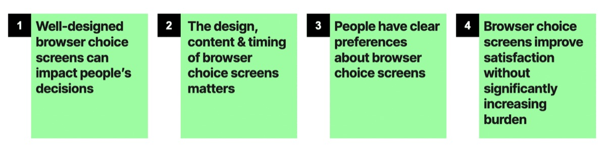
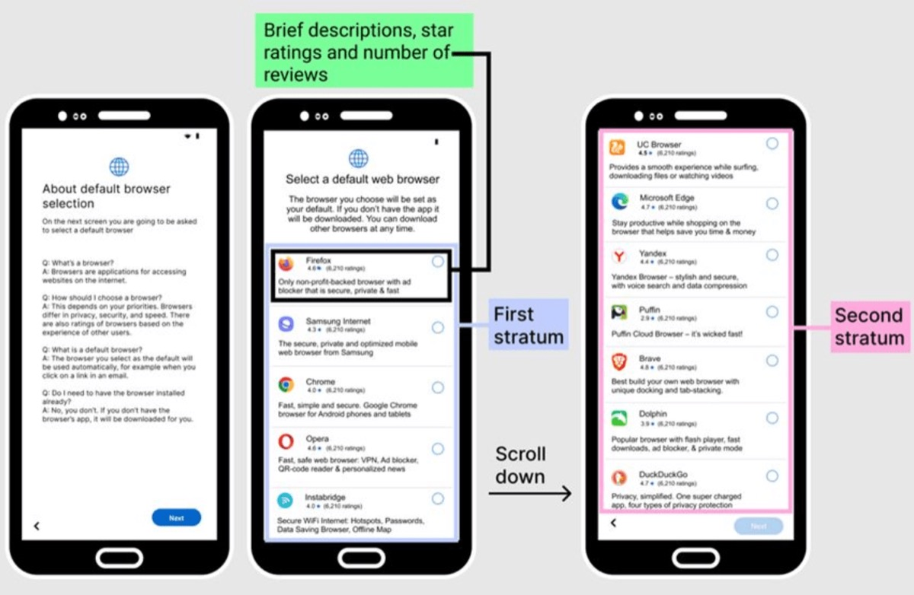

Can Browser Choice Screens Be Effective? Experimental Analysis of the Impact of Their Design, Content and Placement
Research in collaboration with Kush Amlani, Jesper Akesson & Michael Luca.

Browser Choice Screen Example
Browser choice screens are back on the menu. Most notably, the EU’s Digital Markets Act (DMA) will require them from 2024. But lawmakers and regulators in many other jurisdictions have also been looking at choice screens alongside other interventions to address deep-seated competition issues in browsers and browser engines (explored in more detail in our 2022 ‘Five Walled Gardens’ report).
Mozilla’s 25 year history has seen multiple previous attempts to restore competition in browsers fall short. The DMA now has great potential to change this record. It represents a unique opportunity to improve competition and fairness for consumers — and we are committed to making sure it delivers the goals that it sets out to achieve.
However, there has been relatively little focus on the effectiveness of browser competition remedies to date. Only a handful of operating systems have the ability to test different types of browser interventions on their platforms and there is little or no public data or research into this. Thankfully, this is beginning to change.
In order to contribute to the understanding and progress in this area, we have conducted an innovative, large-scale experiment on the factors that influence the effectiveness of one such intervention – browser choice screens. Our research involved 12,000 people in Germany, Spain and Poland setting up a highly realistic virtual Windows or Android device. By varying the design, content and timing of browser choice screens we were able to see how these factors influence consumer choice.

This research showed that browser choice screens have the potential to be effective. Well designed browser choice screens can improve competition, giving people meaningful choice and improving people’s satisfaction and feelings of control. And they can do all of this without overburdening people or taking too much of their time. What’s more, people have strong preferences: it turns out they want the ability to choose their default browser (rather than being assigned one by the operating system/device manufacturer); they also want to pick from a wider range of browsers.
In terms of timing, people prefer to see a browser choice screen during device set-up, rather than after set-up such as when they first use the pre-installed, default browser. This makes sense — at set-up people are making other key decisions about their device settings, but a choice screen shown at the first use of the pre-set browser is likely to interrupt consumer workflows. This is supported by previous research we conducted, testing different concepts to remedy browser competition — beyond choice screens.

Browser Choice Screen Example
Fundamentally, what this research shows is that the design details of browser choice interventions are absolutely critical. Operating systems have the ability and incentive to push people to their own products — this is nothing new. We find that even small changes can impact the effectiveness of browser choice remedies. Detailed regulator oversight and consultation with third parties, including independent browsers, behavioral experts and consumer groups, will be essential to delivering effective remedies. Without this, and other complementary remedies, browser choice screens will remain a missed opportunity. While choice screens won’t, on their own, revolutionize the browser market overnight, if carefully designed they could at least be a step in the right direction.
Gemma Petrie is Principal Researcher at Mozilla, where she leads research on browser choice and competition. For more information on Mozilla's browser competition research, visit https://research.mozilla.org/browser-competition.